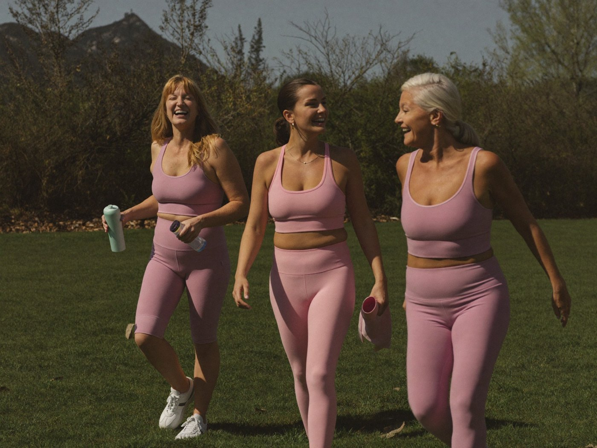

PAUSA · El manual de la menopausia09 · Familia y amigas
en casa
Hablarlo sin pedir perdón
La OMS señala que la menopausia rara vez se habla en las familias. Romper ese silencio no te expone: les da a los tuyos la oportunidad de entenderte, y a tus hijas, de llegar mejor preparadas.

Fig. 81 · Las amigas también cuidan
Qué decir, según con quién hablas
Fig. 82
Hijos pequeños
«Mi cuerpo está cambiando. A veces tengo calor o estoy cansada. No es culpa de nadie, y estoy bien cuidada.»
Adolescentes
«Estoy en la menopausia: mis hormonas cambian y eso afecta mi sueño y mi ánimo. Si me ves irritable, no es contra ti.»
Hijos adultos y amigas
«Estoy pasando por esto y me vendría bien apoyo. ¿Puedo contarte cómo me siento y qué necesito?»
Frases orientativas escritas por el equipo editorial. Adáptalas a tu forma de hablar.
Con tu madre, tías o hermanas: pregúntales cómo vivieron su menopausia. Muchas nunca lo contaron porque nadie preguntó.
Con tus amigas: una charla honesta, un grupo de caminata o un chat compartido convierten el aislamiento en red.
HerramientaCarta para compartir
Rellénala, fotografíala o léela en voz alta
Querida/o:
Quiero contarte algo que estoy viviendo. Estoy en la menopausia y desde hace un tiempo noto
.
Algunos días me siento, y no es por ti.
Lo que más me ayudaría ahora es.
Lo que no me ayuda es.
Gracias por querer entenderme. Con cariño,
Consejo: si quien la recibe es tu pareja, entrégale también la página 46.